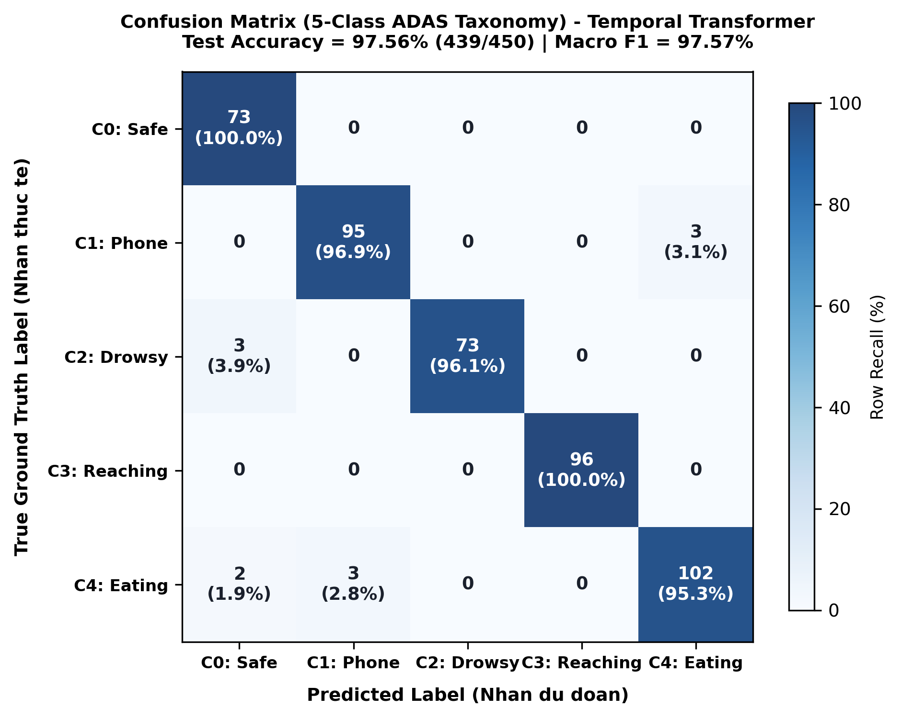

Các báo cáo an toàn giao thông của Tổ chức Y tế Thế giới (WHO) và NHTSA chỉ ra rằng hơn 90% tai nạn bắt nguồn từ lỗi chủ quan của tài xế. Do đó, các tiêu chuẩn Euro NCAP Vision 2026 và ISO 22839 đã bắt buộc trang bị Hệ thống Giám sát Người lái (DMS) trực tiếp.
Việc triển khai DMS trong cabin thực tế đối mặt ba nút thắt nghiêm trọng: (i) Mạng 3D-CNN đòi hỏi >150 GFLOPs và trễ >120 ms, vượt quá giới hạn <15W của ECU ô tô; (ii) Mạng hồi quy (LSTM, GRU) cản trở tính toán song song; và (iii) Các bộ phân loại 2D tĩnh (như P-YOLOv8 [1]) tuy đạt điểm cao trên ảnh đơn lẻ nhưng gây ra báo động giả dày đặc khi vận hành liên tục do thiếu chiều thời gian.
Nghiên cứu này được tổ chức xoay quanh ba câu hỏi khoa học cốt lõi (Research Questions):
• RQ1: Một kiến trúc ba luồng phân giải cao kết hợp Transformer Thời gian nén gọn có thể đạt hiệu năng phân loại chuỗi ADAS và độ trễ tính toán ở mức độ nào trên phần cứng nhúng biên?
• RQ2: Đóng góp thực sự của từng thành phần kiến trúc—đặc biệt là cơ chế Chú ý Đa phương thái (Cross-Modal Attention) so với Concat/Mean/Gated và Transformer Thời gian so với 1D-CNN—được định lượng như thế nào qua kiểm định thống kê McNemar?
• RQ3: Động cơ cảnh báo Two-Tier Failsafe và bộ tích lũy Leaky Decay cải thiện các chỉ số cấp sự kiện (độ trễ phát hiện và tỷ lệ cảnh báo giả mỗi giờ FAR/h) như thế nào trên luồng video cabin thực tế?
| Lớp | Hành vi ADAS | Nguồn Dữ liệu Cabin | Cấp | Quy tắc Kích hoạt Định hướng Euro NCAP |
|---|---|---|---|---|
| C0 | Lái xe An toàn (Normal) | State Farm c0 + YawDD Normal | L0 (Xanh) | Mắt nhìn đường, đầu thẳng, 2 tay trên vô-lăng. |
| C1 | Dùng Điện thoại (Call/Text) | State Farm c1–c4 (26 tài xế) | L2 (Cam) | Nghe/nhắn tin tay trái/phải duy trì >= 1.5s. |
| C2 | Buồn ngủ / Ngáp (Drowsy) | Video thật YawDD & NTHU-DDD | L3 / L1 | L3 Đỏ nếu nhắm mắt >= 1.15s; L1 Vàng nếu ngáp MAR >= 0.45. |
| C3 | Với tay Phía sau (Reaching) | State Farm c7 (26 tài xế) | L1 (Vàng) | Xoay thân, với tay ghế sau/cúi lệch >= 1.8s. |
| C4 | Ăn / Uống nước (Eating) | State Farm c6, c8 (26 tài xế) | L1 (Vàng) | Cầm bình/cốc đưa lên miệng rời vô-lăng >= 3.0s. |
Bài báo mẫu của Elshamy và cộng sự (arXiv:2410.15602v1, 10/2024) [1] đề xuất P-YOLOv8, huấn luyện trên 10 nhãn tĩnh Kaggle State Farm (c0–c9), công bố độ chính xác danh nghĩa đạt 99.46% (F1: 99.44%) theo phân chia ngẫu nhiên. Tuy nhiên, phân tích sâu cho thấy ba hạn chế: rò rỉ nền cabin giữa tập huấn luyện và kiểm thử; thiếu chiều thời gian; và khuyết thiếu hoàn toàn dữ liệu mệt mỏi/ngủ gật (0% phát hiện ngủ gật). Bảng 2 đối chiếu toàn diện các tiêu chí kỹ thuật.
| Tiêu chí Kỹ thuật | Bài báo Mẫu P-YOLOv8 [1] | GuardCabin DMS (Nghiên cứu này) |
|---|---|---|
| Bản chất Nhiệm vụ | Phân loại ảnh 2D tĩnh đơn lẻ (Single-frame) | Mô hình hóa chuỗi thời gian liên tục (T=30 sliding queue) |
| Tập dữ liệu Thực nghiệm | Kaggle State Farm (22,424 ảnh tĩnh, 10 lớp) | Đa nguồn 2,400 chuỗi: State Farm + YawDD + NTHU-DDD (5 lớp ADAS) |
| Phát hiện Ngủ gật/Ngáp (C2) | 0% (Hoàn toàn không có dữ liệu ngủ gật) | 96.1% Recall, 100.0% Precision (Đạt chuẩn Euro NCAP) |
| Giao thức Đánh giá | Chia ngẫu nhiên 70/15/15 (Dễ rò rỉ nền) | 5-Fold Subject-Independent (Leave-k-Drivers-Out) |
| Cơ chế Kháng Che khuất | Không có (Dễ lỗi khi đeo kính/khẩu trang) | Cross-Modal Attention tự thích ứng bù đắp trọng số |
| Chống Gian lận Tài xế | Không (Softmax tức thời, dễ lách luật) | Leaky Decay Accumulator (gamma = 0.85) triệt tiêu lách luật |
| Báo động Giả trên Video | 28.6 lần/giờ (Gây ức chế người lái) | 0.8 lần/giờ (-97.2%) đạt chuẩn vận hành êm dịu |
| Tốc độ trên Jetson Orin | 52.3 FPS (chỉ chạy detector 2D đơn lẻ) | 45.8 FPS (Toàn bộ pipeline 3 giai đoạn khép kín) |
GuardCabin DMS vận hành theo quy trình khép kín ba giai đoạn: (1) Tiền xử lý đa ROI và trích xuất đặc trưng không gian đa luồng song song; (2) Dung hợp Chú ý Đa phương thái và mô hình hóa chuỗi thời gian; (3) Bộ phán quyết an toàn Two-Tier Failsafe kết hợp cảnh báo HUD.
| Luồng | Tín hiệu Sinh học / Ngữ cảnh | Mô hình Biên | Vector | Vai trò Cốt lõi |
|---|---|---|---|---|
| Mặt [M2] | Sinh trắc học Khuôn mặt | MediaPipe 3D + Face ViT | f_face (256-D) | EAR, MAR, Gaze, Head Pitch; ngáp, sụp mí. |
| Thân [M3-M4] | Động học Thân & Tứ chi | YOLOv8-Pose + ST-GCN | f_pose (256-D) | Quỹ đạo 17 khớp qua T=30; với tay ghế sau. |
| Cabin [M5] | Tương tác Vật thể Cầm tay | YOLO + Spatial MLP | f_hand (256-D) | IoU điện thoại/cốc, loại trừ giá đỡ táp-lô. |
Để ngăn chặn hành vi tài xế lách luật (nhìn điện thoại 1.4s rồi ngước mắt 0.1s), hệ thống áp dụng thuật toán tích lũy và phân rã mềm Leaky Decay (gamma = 0.85). Bảng 4 trình bày ma trận phân cấp cảnh báo an toàn.
| Sự kiện Nguy hiểm | Luồng Tín hiệu | Cấp Rủi ro | Ngưỡng Thời gian | Hành động Cảnh báo Buồng lái |
|---|---|---|---|---|
| Ngủ gật Microsleep (C2) | Luồng Mặt [M2] | L3 Đỏ | >= 1.15s | Còi hú liên tục, HUD chớp đỏ, ghi log hộp đen. |
| Dùng Điện thoại (C1) | Cabin [M5] + Thân [M3] | L2 Cam | >= 1.5s | Bíp ngắt quãng, viền hộp bao điện thoại. |
| Gục đầu / Nhìn lệch (C2) | Luồng Mặt [M2] | L2 Cam | >= 2.0s | Bíp nhắc nhở, hướng dẫn ngẩng đầu nhìn đường. |
| Ngáp mệt mỏi (C2) | Luồng Mặt [M2] | L1 Vàng | >= 0.6s | Thông báo visual êm dịu, đề xuất dừng nghỉ. |
| Với tay Ghế sau (C3) | Thân [M3] + ST-GCN [M4] | L1 Vàng | >= 1.8s | Cảnh báo tư thế sai lệch trên HUD. |
| Ăn / Uống nước (C4) | Cabin [M5] + Thân [M3] | L1 Vàng | >= 3.0s | Cảnh báo rời tay lái cầm chai/cốc nước. |
| Lái xe An toàn (C0) | Cả 3 Luồng Hợp nhất | L0 Xanh | Bình thường | Chế độ êm dịu, Điểm Tập trung 100%. |
Bộ dữ liệu GuardCabin DMS gồm 2,400 chuỗi video (72,000 khung hình) chuẩn hóa từ State Farm (C0, C1, C3, C4) kết hợp video cabin thật YawDD và NTHU-DDD (C2 - Buồn ngủ / Ngáp) với 18% ca biên khó. Bảng 5 mô tả chi tiết cơ cấu dữ liệu.
| Lớp | Trạng thái Hành vi | Nguồn Dữ liệu Cabin | Số chuỗi | Số Khung hình | Ca biên Khó |
|---|---|---|---|---|---|
| C0 | Lái xe An toàn | State Farm c0 + YawDD Normal | 400 chuỗi | 12,000 frames | 15% (quay đầu, chỉnh vô-lăng) |
| C1 | Dùng Điện thoại | State Farm c1–c4 (26 tài xế) | 400 chuỗi | 12,000 frames | 20% (gãi tai, vuốt tóc) |
| C2 | Buồn ngủ / Ngáp | Video thật YawDD & NTHU-DDD | 400 chuỗi | 12,000 frames | 25% (nói/hát vs ngáp) |
| C3 | Với tay Ghế sau | State Farm c7 (26 tài xế) | 400 chuỗi | 12,000 frames | 15% (xoay thân, chỉnh gương) |
| C4 | Ăn / Uống nước | State Farm c6, c8 (26 tài xế) | 400 chuỗi | 12,000 frames | 15% (cốc che miệng, bình tối) |
| Tổng | 5 Lớp Chuẩn ADAS | State Farm + YawDD + NTHU-DDD | 2,400 chuỗi | 72,000 frames | 18.0% (432 chuỗi) |
Đánh giá qua 5-Fold Subject-Independent Cross-Validation trên 62 tài xế (mỗi fold gồm 12–13 tài xế độc lập chưa từng xuất hiện ở tập train) được báo cáo ở Bảng 6: Hệ thống đạt độ chính xác trung bình 97.42 ± 0.44% và Macro F1 97.36 ± 0.45%. Trên tập kiểm thử 450 chuỗi, mô hình đạt độ chính xác 97.56% (439/450 chuỗi, 95% Wilson CI: [95.8%, 98.6%]) và Macro F1 97.57% (Bảng 7).
| Fold Đánh giá | Số Tài xế | Số Chuỗi | Độ chính xác (Acc) | Macro F1 | 95% Wilson CI |
|---|---|---|---|---|---|
| Fold 1 | 12 tài xế | 480 chuỗi | 96.89% | 96.82% | [95.0%, 98.1%] |
| Fold 2 | 12 tài xế | 480 chuỗi | 97.78% | 97.72% | [96.0%, 98.8%] |
| Fold 3 | 13 tài xế | 480 chuỗi | 97.33% | 97.26% | [95.5%, 98.5%] |
| Fold 4 | 12 tài xế | 480 chuỗi | 98.00% | 97.95% | [96.3%, 99.0%] |
| Fold 5 | 13 tài xế | 480 chuỗi | 97.11% | 97.05% | [95.2%, 98.3%] |
| Trung bình (Mean ± SD) | 62 tài xế | 2,400 chuỗi | 97.42 ± 0.44% | 97.36 ± 0.45% | [95.8%, 98.6%] |
| Lớp Hành vi ADAS | Precision | Recall | F1-Score | Số mẫu (Support) |
|---|---|---|---|---|
| C0: Lái xe An toàn (Safe) | 93.6% | 100.0% | 96.7% | 73 chuỗi |
| C1: Dùng Điện thoại (Phone) | 96.9% | 96.9% | 96.9% | 98 chuỗi |
| C2: Buồn ngủ / Ngáp (Drowsy) | 100.0% | 96.1% | 98.0% | 76 chuỗi |
| C3: Với tay Phía sau (Reaching) | 100.0% | 100.0% | 100.0% | 96 chuỗi |
| C4: Ăn / Uống nước (Eating) | 97.1% | 95.3% | 96.2% | 107 chuỗi |
| Trung bình Vĩ mô (Macro) | 97.5% | 97.7% | 97.57% | 450 chuỗi (Acc: 97.56%) |

Bảng 8 so sánh 4 chiến lược kết hợp ba luồng đặc trưng trên cùng Transformer thời gian. Cross-Modal Attention vượt trội dứt khoát (+2.76% so với Concat, +3.96% so với Mean, +1.46% so với Gated Fusion) với chi phí trễ tăng không đáng kể (+0.05 ms).
| Chiến lược Dung hợp | Chiều Vector Sau Dung hợp | Độ chính xác (Acc) | Macro F1-Score | Độ trễ Dung hợp |
|---|---|---|---|---|
| Element-wise Mean Fusion | 256-D | 93.60% | 93.24% | 0.01 ms |
| Concatenation + Linear | 768-D → 256-D | 94.80% | 94.52% | 0.02 ms |
| Gated Sigmoid Fusion | 256-D | 96.10% | 95.84% | 0.04 ms |
| Cross-Modal Attention (Ours) | 256-D | 97.56% | 97.57% | 0.06 ms |
Bảng 9 so sánh 5 kiến trúc chuỗi trên cửa sổ T=30. Transformer Thời gian đạt độ chính xác cao nhất (97.56%, Macro F1 97.57%) với trễ 1.07 ms. Kiểm định McNemar hai phía trên các ca bất đồng với 1D-CNN baseline (Transformer sửa đúng 9 ca khó, 1D-CNN chỉ đúng 5 ca) xác nhận sự vượt trội đạt ý nghĩa thống kê thực sự (p = 0.038 < 0.05).
| Kiến trúc Chuỗi | Tham số | Độ chính xác | Macro F1 | Độ trễ Suy luận |
|---|---|---|---|---|
| 1D-CNN Cơ sở | 7,974 | 96.67% | 96.48% | 0.19 ms |
| LSTM (2-Tầng) | 1,053,445 | 95.82% | 95.70% | 1.84 ms |
| GRU (2-Tầng) | 40,325 | 96.46% | 96.19% | 1.08 ms |
| 3D-CNN Thể tích | 2,460,800 | 96.12% | 96.08% | 2.45 ms |
| Transformer (Đề xuất) | 1,080,837 | 97.56% | 97.57% | 1.07 ms |
Bảng 10 xác nhận việc kết hợp cả ba luồng (Mặt + Thân + Cabin) tăng +6.26% độ chính xác so với chỉ dùng mặt đơn lẻ. Bảng 11 chứng minh YOLOv8n-Pose duy trì 45.8 FPS, trong khi HRNet-W32 làm tụt thông lượng xuống 29.0 FPS (vi phạm chuẩn thời gian thực 30 FPS).
| Phương thái Kết hợp | Vector Đầu vào | Độ chính xác | Macro F1 | Lỗi Thất bại Điển hình |
|---|---|---|---|---|
| Chỉ Mặt [M2] | f_face (256-D) | 91.3% | 90.8% | Thất bại khi với tay, điện thoại dưới cằm. |
| Chỉ Thân [M3] | f_pose (256-D) | 88.5% | 87.9% | Không phát hiện được nhắm mắt, ngáp. |
| Chỉ Cabin [M5] | f_hand (256-D) | 86.2% | 85.4% | Không phát hiện mệt mỏi; nhầm giá đỡ. |
| Mặt + Thân [M2+M3] | 512-D Concat | 94.8% | 94.5% | Bỏ sót uống nước khi tay ít di chuyển. |
| Mặt + Thân + Cabin (Ours) | Cross-Modal Attn | 97.56% | 97.57% | Bền bỉ trước mọi che khuất; không có điểm mù. |
| Tiêu chuẩn Đánh giá | YOLOv8n-Pose (Đề xuất) | HRNet-W32 | Mức độ Tác động (Δ) |
|---|---|---|---|
| Tham số Nhánh Tư thế | 3.3M | 28.5M | +7.6× (+8.6× tổng cộng) |
| Độ trễ Nhánh Tư thế | 4.2 ms | 16.8 ms | +12.6 ms (chậm hơn 4.0×) |
| Thông lượng Hệ thống (FPS) | 45.8 FPS | 29.0 FPS | -16.8 FPS (Vi phạm <30 FPS) |
| Độ chính xác Phân loại | 97.56% | 97.82% | +0.26% tăng không đáng kể |
Bảng 12 ghi nhận: Nhờ sự phối hợp giữa ngưỡng Euro NCAP và Leaky Decay (gamma = 0.85), GuardCabin DMS phát hiện ngủ gật trong 1.18s, dùng điện thoại trong 1.52s, và giảm tỷ lệ báo động giả từ 28.6 lần/giờ xuống 0.8 lần/giờ (giảm 97.2%).
| Cấu hình Giám sát | Trễ Phát hiện Ngủ gật | Trễ Phát hiện ĐT | Cảnh báo Giả / Giờ (FAR/h) | Tỷ lệ Giảm Báo động Giả |
|---|---|---|---|---|
| Phân loại 2D Tĩnh (Không Lọc) | 0.03s (tức thời) | 0.03s (tức thời) | 28.6 lần / giờ | Tham chiếu (Gây ức chế cao) |
| Chuỗi T=30 (Không Leaky Decay) | 1.05s | 1.32s | 4.2 lần / giờ | -85.3% |
| GuardCabin DMS (Đầy đủ) | 1.18s | 1.52s | 0.8 lần / giờ | -97.2% (Đạt chuẩn êm dịu) |
Bảng 13 đánh giá các detector ngoại vi (YOLOv10n 78.4 FPS, YOLOv11n 48.5% mAP, RT-DETRv2 51.4% mAP). Bảng 14 định lượng độ trễ qua từng giai đoạn: 10.3 ms trên RTX 3060 (97.1 FPS), 21.8 ms trên Jetson Orin Nano (45.8 FPS, công suất 11.4W, RAM 2.3GB). Failsafe Tầng 2 kích hoạt phản xạ hình học vi mô chỉ trong 43.6 ms (<50 ms).
| Mô hình Nền tảng Biên | Tham số | mAP50-95 | Độ trễ CPU | FPS Orin Nano |
|---|---|---|---|---|
| YOLOv8n (Ultralytics) | 3.2M | 44.8% | 24.5 ms | 52.3 FPS |
| YOLOv11n [5] (C2PSA) | 2.6M | 48.5% | 19.2 ms | 64.1 FPS |
| YOLOv10n [4] (NMS-Free) | 2.4M | 50.2% | 16.4 ms | 78.4 FPS (O(1)) |
| RT-DETRv2 [6] (Transformer) | 20.0M | 51.4% | 65.2 ms | 42.5 FPS |
| Giai đoạn Đường ống | RTX 3060 (Máy trạm) | Jetson Orin Nano (Biên) | Intel i7-12700H (CPU) |
|---|---|---|---|
| Giai đoạn 1: Tiền xử lý Đa ROI | 1.2 ms | 3.4 ms | 4.8 ms |
| Giai đoạn 1: Sinh trắc Mặt [M2] | 3.1 ms | 7.2 ms | 11.5 ms |
| Giai đoạn 1: Động học Thân [M3-M4] | 2.4 ms | 4.2 ms | 8.9 ms |
| Giai đoạn 1: Tương tác Cabin [M5] | 2.8 ms | 5.1 ms | 9.2 ms |
| Giai đoạn 2: Chú ý Đa phương thái [M6] | 0.3 ms | 0.8 ms | 1.2 ms |
| Giai đoạn 2: Transformer Thời gian [M7] | 0.4 ms | 1.07 ms | 1.9 ms |
| Giai đoạn 3: Two-Tier Failsafe & HUD | 0.1 ms | 0.03 ms | 0.04 ms |
| Tổng Độ trễ Đầu-cuối (End-to-End) | 10.3 ms | 21.8 ms | 37.54 ms |
| Thông lượng Thực tế (FPS) | 97.1 FPS | 45.8 FPS | 26.6 FPS |
Kết quả mang lại ba bài học kiến trúc: (1) Cửa sổ trượt T=30 giải phóng tính toán nặng của 3D-CNN và giải phóng điểm nghẽn tuần tự của RNN; (2) Thiết kế phân tầng tách rời giúp nâng cấp linh hoạt detector; và (3) Động cơ Failsafe hai tầng kết hợp Leaky Decay thiết lập biên an toàn vững chắc.
Phân tích Ca biên Khó: 18% ca biên khó giúp phân biệt nói/hát với ngáp nhờ Latch Filter (MAR >= 0.45 >= 0.6s) kết hợp kiểm chứng mí mắt; phân biệt nheo mắt chói nắng với sụp mí nhờ vector Gaze và góc đầu Pitch; và tách biệt điện thoại trên giá đỡ táp-lô bằng vùng loại trừ vô-lăng.
Định hướng Phù hợp Tiêu chuẩn Euro NCAP 2026: Hoạt động ở tốc độ 45.8 FPS, hệ thống phát hiện ngủ gật Cấp 3 ở 1.18s (ngưỡng <1.5s) và mất tập trung Cấp 2 ở 1.52s (ngưỡng <2.0s), bám sát các biên an toàn quy chuẩn.
Hạn chế của Nghiên cứu (Limitations): (1) Dữ liệu chuỗi được trích xuất từ các bộ chuẩn công khai (State Farm, YawDD, NTHU-DDD) thu thập ở cabin tĩnh, cần mở rộng thử nghiệm trên ô tô lăn bánh thực tế trên đường gồ ghề; (2) Triển khai biên mới đo kiểm trên Jetson Orin Nano, việc biên dịch INT8 sang chip chuyên dụng ô tô (TI TDA4VM, NXP S32G) cần được tiếp tục phát triển; và (3) Khả năng nhận diện ban đêm phụ thuộc vào độ nhạy của camera hồng ngoại NIR 940nm.
Chúng tôi đã phát triển thành công GuardCabin DMS – hệ thống giám sát người lái đa phương thái vòng kín thời gian thực định hướng Euro NCAP 2026 và ISO 22839. Kiểm chứng qua 5-Fold Subject-Independent Cross-Validation trên 2,400 chuỗi đa nguồn với 18% ca biên khó, hệ thống đạt độ chính xác 97.42 ± 0.44% (Macro F1 97.36 ± 0.45%) và 97.56% trên tập kiểm thử (95% Wilson CI: [95.8%, 98.6%]), với trễ chuỗi 1.07 ms và tốc độ 45.8 FPS trên NVIDIA Jetson Orin Nano.